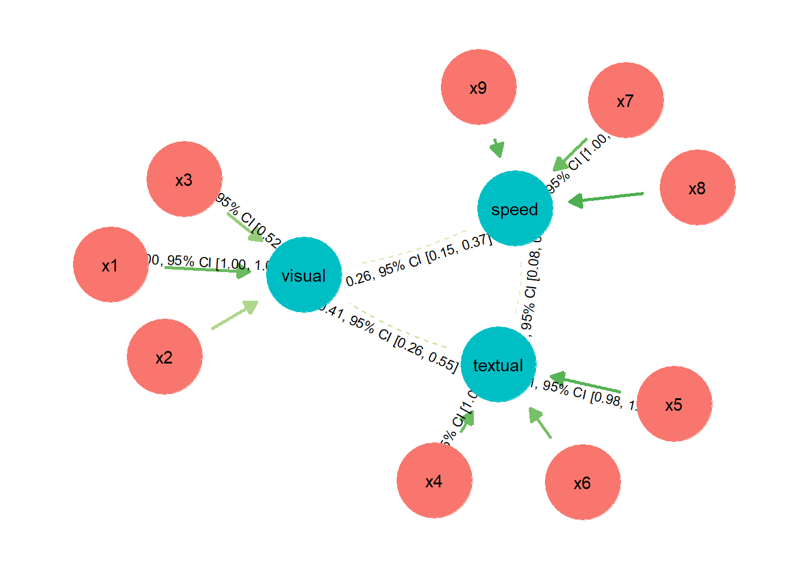
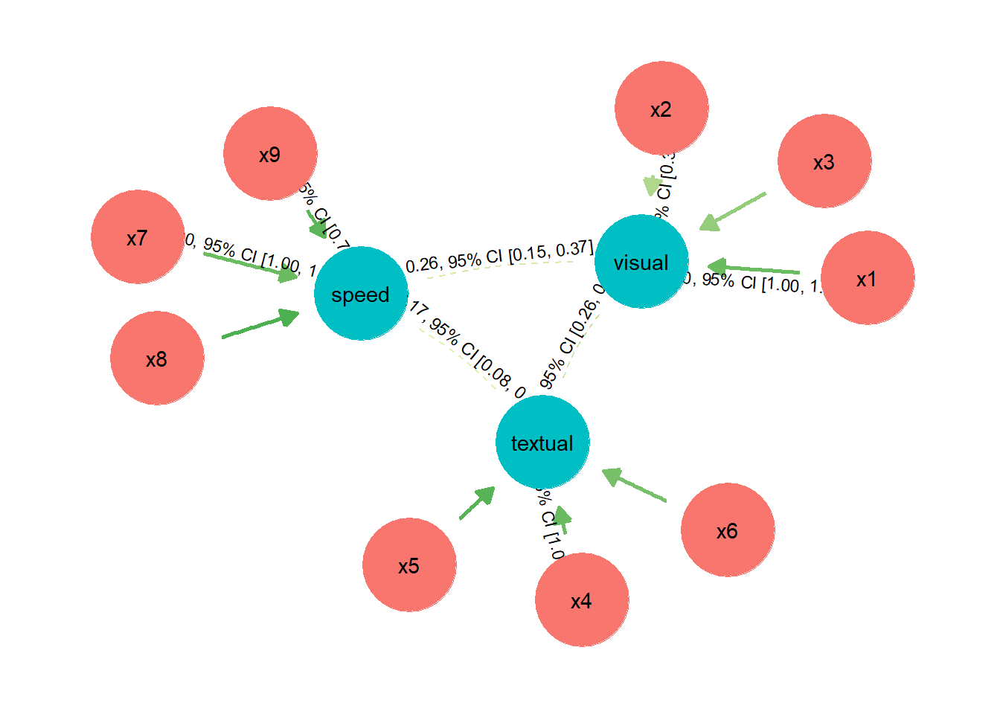
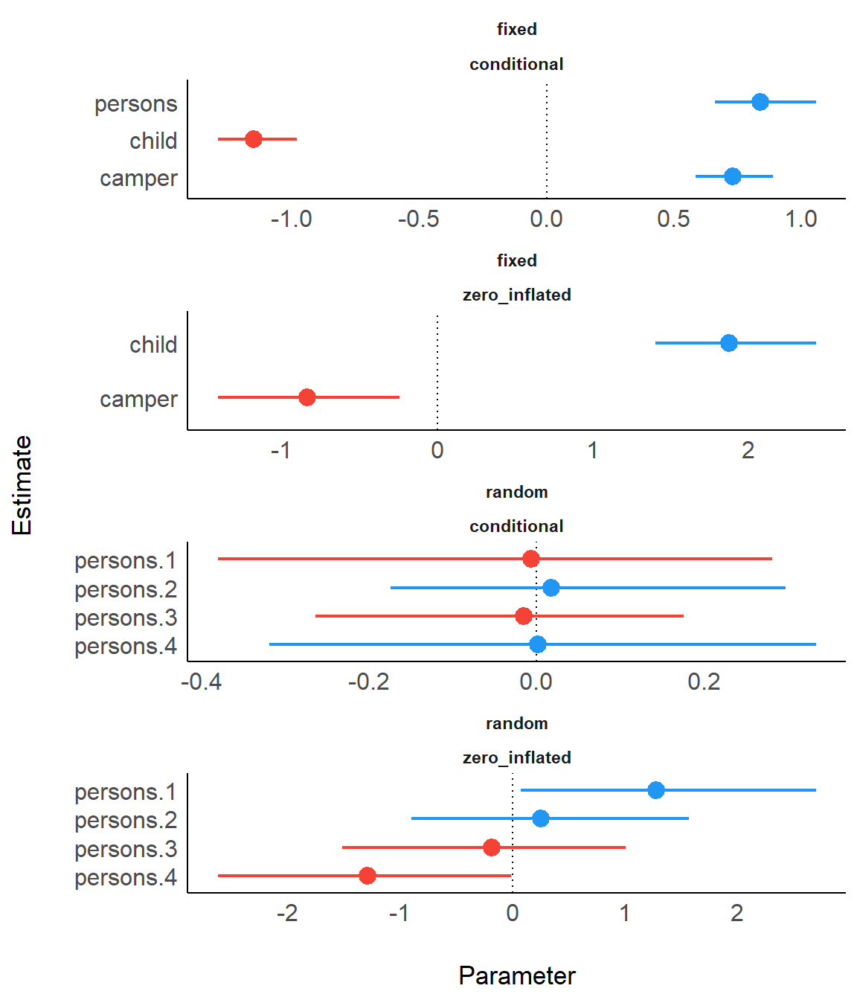
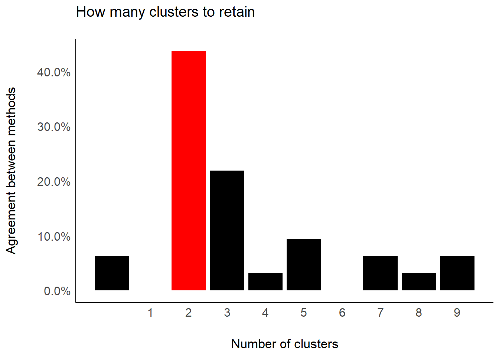
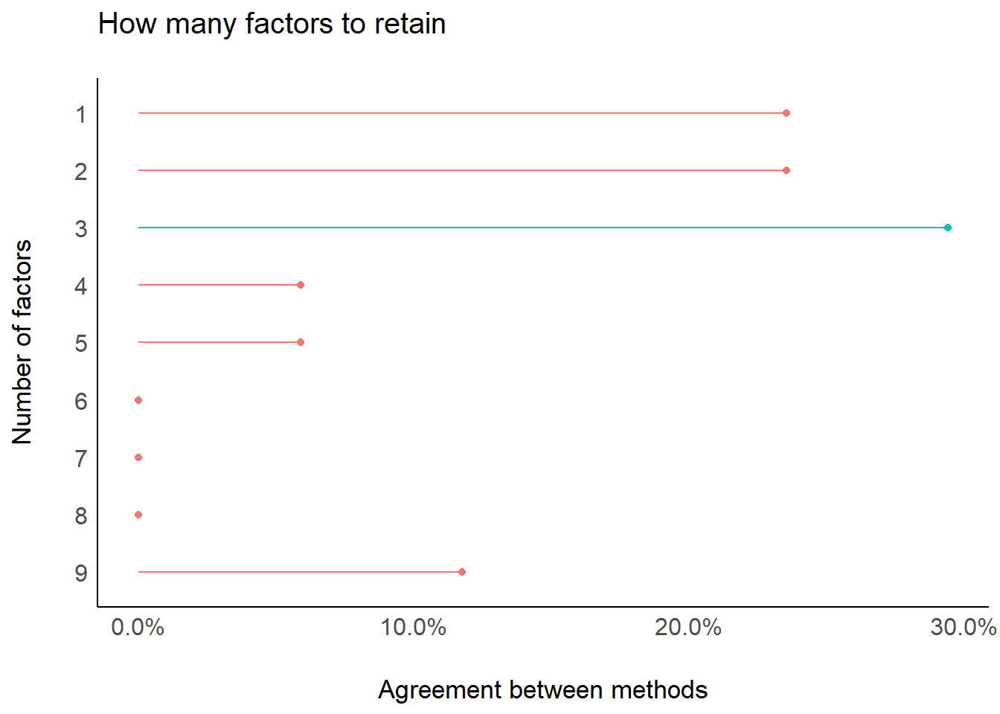

Plotting Functions for the parameters Package
parameters.RmdSetup and Model Fitting
library(parameters)
library(insight)
library(see)
library(glmmTMB)
library(ggplot2)
data("Salamanders")
theme_set(theme_modern())# fit example model
model <- glmmTMB(
count ~ spp + mined + (1 | site),
ziformula = ~ mined,
family = poisson(),
data = Salamanders
)
model_parameters(model)
#> # Conditional component
#>
#> Parameter | Coefficient | SE | 95% CI | p
#> ----------------------------------------------------------
#> (Intercept) | -0.36 | 0.28 | [-0.90, 0.18] | > .1
#> spp (PR) | -1.27 | 0.24 | [-1.74, -0.80] | < .001
#> spp (DM) | 0.27 | 0.14 | [ 0.00, 0.54] | 0.05
#> spp (EC-A) | -0.57 | 0.21 | [-0.97, -0.16] | < .01
#> spp (EC-L) | 0.67 | 0.13 | [ 0.41, 0.92] | < .001
#> spp (DES-L) | 0.63 | 0.13 | [ 0.38, 0.87] | < .001
#> spp (DF) | 0.12 | 0.15 | [-0.17, 0.40] | > .1
#> mined (no) | 1.27 | 0.27 | [ 0.74, 1.80] | < .001
#>
#> # Zero-Inflated component
#>
#> Parameter | Coefficient | SE | 95% CI | p
#> ----------------------------------------------------------
#> (Intercept) | 0.79 | 0.27 | [ 0.26, 1.32] | < .01
#> mined (no) | -1.84 | 0.31 | [-2.46, -1.23] | < .001Principal Component Analysis
data(mtcars)
result <- principal_components(mtcars[, 1:7], n = "all", threshold = 0.2)
result
#> # Loadings from Principal Component Analysis (no rotation)
#>
#> Variable | PC1 | PC2 | PC3 | PC4 | PC5 | PC6 | Complexity
#> -------------------------------------------------------------------
#> mpg | -0.93 | | | -0.30 | | | 1.30
#> cyl | 0.96 | | | | | -0.21 | 1.18
#> disp | 0.95 | | | -0.23 | | | 1.16
#> hp | 0.87 | 0.36 | | | 0.30 | | 1.64
#> drat | -0.75 | 0.48 | 0.44 | | | | 2.47
#> wt | 0.88 | -0.35 | 0.26 | | | | 1.54
#> qsec | -0.54 | -0.81 | | | | | 1.96
#>
#> The 6 principal components accounted for 99.30% of the total variance of the original data (PC1 = 72.66%, PC2 = 16.52%, PC3 = 4.93%, PC4 = 2.26%, PC5 = 1.85%, PC6 = 1.08%).
plot(result)
result <- principal_components(
mtcars[, 1:7],
n = 3,
rotation = "varimax",
threshold = "max",
sort = TRUE
)
result
#> # Rotated loadings from Principal Component Analysis (varimax-rotation)
#>
#> Variable | RC1 | RC2 | RC3 | Complexity | Uniqueness
#> ----------------------------------------------------------
#> wt | 0.91 | | | 1.31 | 0.03
#> mpg | -0.82 | | | 1.70 | 0.11
#> disp | 0.79 | | | 1.95 | 0.08
#> cyl | 0.64 | | | 2.84 | 0.06
#> qsec | | -0.98 | | 1.02 | 0.03
#> hp | | 0.69 | | 2.09 | 0.09
#> drat | | | -0.90 | 1.43 | 0.01
#>
#> The 3 principal components (varimax rotation) accounted for 94.11% of the total variance of the original data (RC1 = 45.02%, RC2 = 27.79%, RC3 = 21.30%).
plot(result)
Number of Components/Factors to Retain
data(mtcars)
result <- n_factors(mtcars, type = "PCA")
result
#> # Method Agreement Procedure:
#>
#> The choice of 3 dimensions is supported by 5 (29.41%) methods out of 17 (Bartlett, CNG, SE Scree, R2, Velicer's MAP).
plot(result)

Number of Clusters to Retain
data(iris)
result <- n_clusters(standardize(iris[, 1:4]))
result
#> # Method Agreement Procedure:
#>
#> The choice of 2 clusters is supported by 14 (43.75%) methods out of 32 (CH, Cindex, DB, Silhouette, Beale, Ratkowsky, PtBiserial, McClain, Dunn, SDindex, Mixture, APN, ADM, Connectivity).
plot(result)
